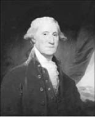
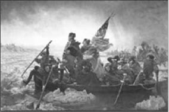
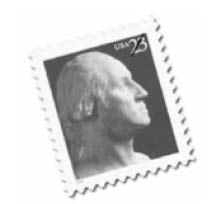
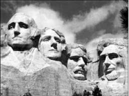

George Washington, Ressam Gilbert Stuart, 1795
George Washington (1732-1799)
“Barışı korumanın en iyi yolu, savaşa hazır olmaktır.”
22 Şubat 1732’de ABD’nin Virginia eyaletinde doğdu. İngiliz asıllı bir aileden gelen Washington, ABD’nin bağımsızlık savaşında önemli rol oynadı. 1775’te Kongre’de oybirliğiyle Kıta Ordusu’nun Başkomutanı seçildi. Askerin her türlü ihtiyacıyla ve sayısının artırılmasıyla çok yakından ilgilenen Washington, imkânlarının farkında olarak savaş planlarından çok gerekli tedarik işleriyle uğraştı. Kongre’ye bu konudaki taleplerini sürekli olarak iletti, ordusunu zorunlu hâller ve açıkça kazanılacak savaşlar haricinde hiç kullanmadı.
George Washington bir gün sivil giyinip atıyla ormanda gezintiye çıkar. Bu sırada bir grup askerin büyük bir ağacı taşımaya çalıştığını görür. Başlarındaki onbaşı sadece bağırmakla yetinir, diğer askerlere hiç katkıda bulunmaz.
Washington atından iner ve izin isteyerek onlara yardım eder. İşi bitirdiklerinde ise terini silerken onbaşıya dönerek: 46
“Bir daha böyle bir iş olursa bana haber verin. Beni bulmak kolaydır. Başkomutan Washington dersiniz” der ve oradan hiçbir şey olmamış gibi uzaklaşır.
1776 yılının Mart ayında İngilizleri Boston’dan çekilmeye zorlar ve 4 Temmuz 1776’da Birleşik Devletler bağımsızlığını ilan eder. Aynı yılın Ağustos ayında Long Island savaşında yenilir ve geri çekilmek zorunda kalır.
25 Aralık 1776 tarihinde Delaware Nehri’ni geçerek İngilizlerin paralı askerlerini gafil avlayıp önemli bir başarı kazanılması bağımsızlık yönünde morallerin yükselmesini sağlar.
1781’de Yorktown savaşında Fransız birliklerin desteğiyle İngilizleri yenilgiye uğratması savaşın sonunu belirlemiş olur. 1783’te New York’a girilir. Aynı yıl İngiliz Kraliyeti’yle yapılan Paris Antlaşması’yla Amerika’nın bağımsızlığı tanınmış olur.

Washington askerleriyle Delaware Nehri’ni geçerken, Ressam Emanuel G.Leutze, 1851

Komutanlığı bırakan Washington ABD’nin ilk başkanı seçilir. Başkanlık kurumunu şekillendirir. İki dönem yaptığı başkanlıktan sonra iktidarı muhalefete devrederek ABD’de bir gelenek başlatır.

Rushmore Dağı Anıtı, Güney Dakota, ABD. ABD’nin önde gelen dört başkanını simgeleyen bu dağ-anıt, heykeltıraş John Gutzon Borglum, oğlu ve dört yüz kişilik bir ekip tarafından 1927-1941 yılları arasında tamamlanmıştır. Soldan sağa: George Washington, Thomas Jefferson, Theodore Roosevelt, Abraham Lincoln.
G. Washington’un sekreteri bir gün geç kalmasını saatinin geri kalmasına bağlayarak özür diler. Bunun üzerine G. Washington soğukkanlılıkla şöyle der:
“O hâlde, ya sen kendine yeni bir saat almalısın veya ben kendime yeni bir sekreter.”
Amerikan tarihine askeri ve siyasi yönden önemli katkıları olan George Washington 14 Aralık 1799’da ölür.
George Washington’dan...
“Elinden geldiği kadar uğraştığı hâlde başarı kazanamayan insanı azarlama.
Düşmanın dahi olsa, hiç kimsenin felaketinden memnun olmuş görünme.
Her işi zamanında konuş, konuşurken hiç kimseye arkanı dönme.
Yüksek bir memuriyete sahip olsan bile, yaş, sosyal mevki veya herhangi bir bakımdan seninle denk olanlardan, senin kadar yükselmiş olmasalar bile, hürmetini esirgeme.
Vicdan adı verilen ilahi kıvılcımı kalbinde canlı tutmaya gayret et.”